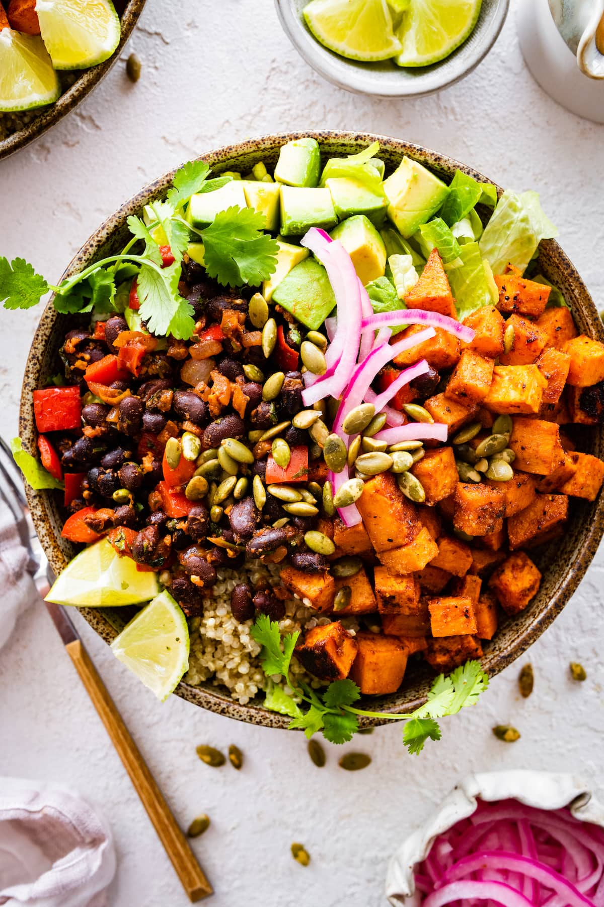

Mexican Bowls

Ingredients
- Quinoa
- Black beans
- Onion
- Cumin
- Paprika
- Salt & Pepper
- Olive oil
- Sweet potatoes
Mango Salsa
- Mangos
- Tomatoes
- Cilantro
- Red onion
- Jalapeno
- Lime
Toppings
- Sour Cream
- Cheese
- Avacado
- Lime wedges
Preheat oven to 350°F-400°F.
Slice sweet potatoes into bite sized pieces. Season with cumin, paprika, salt, pepper, and cover with olive oil. Lay out on a baking sheet (covered with tin foil for easy cleanup) and cook for about 30-40 minutes or until potatoes are soft.
Cook quinoa according to package instructions.
Prepare salsa. (Mangos can be emitted when they are out of season)
Dice onion. In a large skillet on the stove, heat about 1 TBS olive oil and saute the onion for several minutes. Drain and rise the canned black beans. Once onions are slightly softened, add black beans and cook. Season with cumin, paprika, salt, pepper, and other desired spices.
Serve and top with desired toppings.